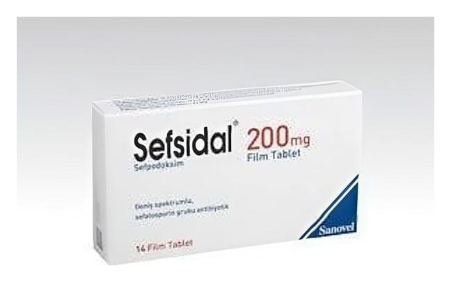

Sefsidal 200 mg Film Tablet, 14 Tablet

Ne için kullanılır
KT · Bölüm 1Her bir film tablet 200 mg sefpodoksime eşdeğer sefpodoksim proksetil içerir. Bu ilaç sefalosporinler olarak bilinen bir antibiyotik grubunda yer alır. Bakteriyel hücre duvarı sentezine engel olarak bakterileri öldürürler ve sefalosporinler enfeksiyonları tedavi eder. SEFSİDAL, 10, 14 ve 20 film tablet içeren blister ambalajlarda, karton kutu içinde takdim edilir. SEFSİDAL, aşağıda belirtilen durumların tedavisinde kullanılır: * Alt solunum yolu enfeksiyonlarında (kronik bronşit, toplumda kazanılmış zatürre, kronik bronşitin akut bakteriyel alevlenmesi), * Üst solunum yolları enfeksiyonlarında (farenjit (yutak iltihabı), bademcik iltihaplanması, akut orta kulak iltihabı, sinüzit (kafa içindeki boşlukların iltihabı)), * Seksüel yolla bulaşan hastalıklarda (gonore), * Kadınlarda görülen akut komplike olmayan makat bölgesi enfeksiyonlarında, * İdrar yolu enfeksiyonları (sistit ve böbrek iltihabı), * Cilt ve yumuşak doku enfeksiyonlarında. |